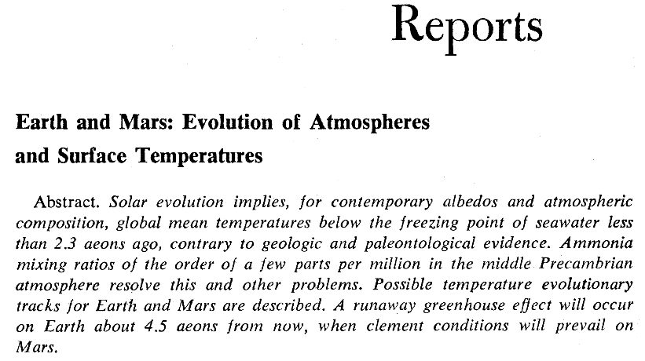

Planetary Climate
Big Questions
Historical vs. Ahistorical sciences
Formation of the crust

- How long?
- Dependence on atmospheric composition?
- Implications for energy sources
Faint Young Sun Problem

- Atmospheric composition?
- Long term stability of surface temperature
Simple things used in unusual ways!
Sagan and Mullen (1972)
Goldilocks zone

- What determines it?
- If Earth, Mars, Venus were similar to begin with, how did they end up so different?
Neoproterozoic Snowball Earth

- What caused it?
- How did we get out of it?
- What followed?
Closer to home
- Eocene's equable climate
- The stable(?) Holocene
- Anthropocene